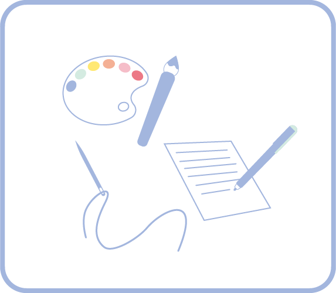

表現
特長
"自分の推し活を見せる”ことを重視するスタイル。
SNSでの発信や、創作活動（イラスト・グッズ制作・コスプレなど）を通して推しへの愛を形にするタイプ。
例えば…
- 推しをテーマにしたイラスト・漫画・小説などを描く
- 手作りグッズをSNSで公開・配布・販売する
- コスプレをする・SNSで公開する
- 推し活記録をブログや日記で発信する
- 推しに関するテンプレや診断を自作して共有する など
"自分の推し活を見せる”ことを重視するスタイル。
SNSでの発信や、創作活動（イラスト・グッズ制作・コスプレなど）を通して推しへの愛を形にするタイプ。